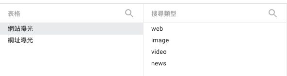
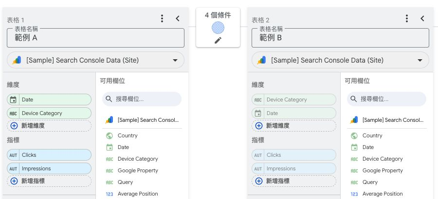
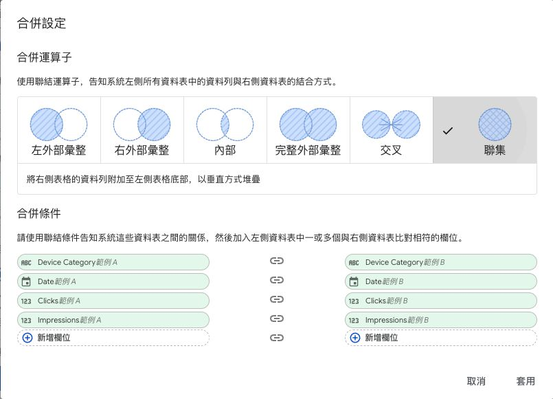
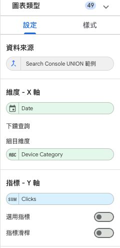

這篇文章會用簡單的商品與銷售案例，帶你認識 Data Studio的六種資料合併方式，搞懂什麼時候該用 JOIN、什麼時候該用聯集（UNION）。接著會說明新加入的聯集能解決什麼問題、合併時要注意哪些細節，最後搭配實際操作畫面，帶你完成資料合併與趨勢圖設定。
文章目錄
1. Data Studio 的六種合併方式
資料分散在不同表格，卻想放進同一張圖表分析時，可以使用 Data Studio 的「混合資料」。其中的「合併設定」，就是決定這些表要怎麼組合。
例如，商品名稱在一張表、銷量在另一張表，就要用商品代號找出對應資料，放在一起看；如果是每個月各有一份銷售月報，就要把各月的紀錄收進同一張表。前者適合用 JOIN，後者適合用聯集。
六種選項中，前五種屬於 JOIN，最後一種是聯集。先看前四種 JOIN：它們都會找兩張表的共同資料，差別在於找不到對應資料時，要留下哪一邊。下面用同一組商品資料來比較：
- 左表「商品清單」：A 是馬克杯，B 是保溫瓶。
- 右表「本月銷量」：B 賣了 7 件，C 賣了 2 件。
用商品代號配對，只有 B 同時出現在兩張表。點選左側選單，看看 A、B、C 在不同選法下會不會留下；交叉與聯集則各用一個更適合的例子說明。
2. 聯集是什麼？為什麼需要它？
聯集（UNION）可以把分散在不同表格、欄位用途相同的資料合成一張表，例如把每個月的銷售月報合在一起，就能在同一張圖比較各月銷量。
用兩份銷售月報看聯集怎麼運作
沿用剛才的例子：1 月賣了 8 個馬克杯，2 月賣了 12 個。不過，兩份月報的欄位名稱不太一樣：1 月叫「月份、商品、銷量」，2 月叫「月份、品項、售出件數」。
在 Data Studio 的「合併條件」裡，把月份對月份、商品對品項、銷量對售出件數，就是告訴系統哪些欄位放的是同一種資料。月份的值可以不同，1 月和 2 月仍會各自保留。
| 月份 | 商品 | 銷量 |
|---|---|---|
| 1 月 | 馬克杯 | 8 件 |
| 2 月 | 馬克杯 | 12 件 |
合併後，1 月的 8 件和 2 月的 12 件仍是兩筆紀錄。畫趨勢圖時，橫軸放月份、數值選銷量，就能比較這兩個月。要看總銷量，再讓圖表加總，才會得到 20 件。
為什麼 Data Studio 要加入聯集？
每月一份報表、每間門市一份報表，是很常見的資料整理方式。但要看整體成效，就得先把這些資料集合起來。過去常需要在試算表或資料庫先合表，再接進 Data Studio；現在可以直接在「混合資料」裡完成。這是 Data Studio 在 2026 年 11 月 5 日加入聯集後，能省下的一道處理步驟。 Google 更新公告
設定時，兩張表選入的維度數量、指標數量要分別一致。以上面的月報來說，兩邊都是「月份、商品」兩個維度，以及「銷量」一個指標。欄名可以不同，但每個欄位都要找到對應欄位，而且資料型態要一致，例如文字對文字、數字對數字。 Google：欄位配對說明
想看其他工具怎麼做同類操作，可以參考 Tableau 的按月合表範例和 Microsoft Power Query 的追加資料列範例。實際配對和去重方式以各工具的規則為準。
3. SEO 實作：把三種搜尋點擊畫在同一張圖
了解聯集的用途後，接下來用 SEO 週報實作。假設我們想在同一張趨勢圖，比較 Search Console 的網頁、圖片和影片搜尋點擊，就可以先用聯集合併三份資料，再用「搜尋類型」分成三條線。
步驟一：建立三份資料來源
使用 Search Console 連接器，將同一個網站連接三次。三份都選「網站曝光」，搜尋類型則分別選 web（網頁）、image（圖片）、video（影片）。建議也用這三個名稱命名來源，後面比較不容易選錯。


這個例子先看整個網站的點擊。如果還想分析讀者點進哪一頁，三份都改選「網址曝光」，並在後續各表加入「到達頁」維度。
步驟二：加入三張表，標記各自的搜尋類型
在報表編輯模式開啟資源 → 管理混合資料 → 新增混合，先選一份來源，再用「合併其他資料表」加入另外兩份。每張表都加入日期（Date）維度，以及點擊（Clicks）、曝光（Impressions）指標。


接著替每張表加上來源標籤，讓合併後仍能分辨資料來自哪種搜尋。各表點新增維度 → 新增計算結果欄位，名稱都設為「搜尋類型」，公式分別填入：
- 網頁搜尋的表：
"web" - 圖片搜尋的表：
"image" - 影片搜尋的表：
"video"
公式中的雙引號要一起輸入，表示這是一段固定文字。
步驟三：選擇聯集，設定欄位對應
點兩張表之間的鉛筆圖示，將合併方式設為「聯集」，再依序設定日期對日期、搜尋類型對搜尋類型、點擊對點擊、曝光對曝光。三張表之間有兩處合併設定，兩處都要完成。


儲存後，三種搜尋資料就會共用日期、搜尋類型、點擊、曝光這四個欄位。接下來，圖表只要使用這份混合資料，就能同時取得三種搜尋的數字。
步驟四：設定搜尋點擊趨勢圖
新增一張時序圖，資料來源選剛才儲存的混合資料。X 軸選日期、Y 軸選點擊、細目維度選搜尋類型。「細目維度」就是用來分線的欄位，設好後，網頁、圖片、影片搜尋就會各自畫成一條線。


做完後，核對一次原始數字
圖表設定完成後，先挑一小段日期核對，確認合併沒有漏掉資料，再用來製作正式週報。
- 點擊和曝光：使用相同的日期區間與篩選條件，分別核對 web、image、video，確認與各來源的原始數字一致。
- 若要再算整體點閱率（CTR）：用總點擊除以總曝光。例如 16 次點擊、400 次曝光，CTR 就是 16 ÷ 400 = 4%。公式為
SUM(點擊) / SUM(曝光)，不要直接平均三種搜尋的 CTR。 Google：重新彙總比率
4. 常見問題
最多能加幾張表？能混用 JOIN 和 UNION 嗎？
一份混合資料最多加入五張表，而且合併方式要全用 JOIN 或全用 UNION。例如三張表要做聯集，兩處合併設定都要選 UNION，不能一處選 JOIN、另一處選 UNION。
聯集會自動把相同日期的數字相加嗎？
聯集負責把紀錄集合起來；圖表怎麼加總，要看你放了哪些維度與指標。例如同一天的 web 有 8 次點擊、image 有 8 次點擊，聯集後是兩筆不同紀錄。圖表按搜尋類型區分時，會分別看到 8 和 8；只按日期顯示並加總點擊時，才會看到 16。
要保留每一筆原始明細怎麼辦？
如果來源有每筆紀錄的唯一編號，例如訂單明細 ID，將它加入維度，才能讓系統分辨每筆資料。因為 Data Studio 在合併前就會按維度整理、加總資料，只加上來源名稱，不一定能保留來源內的每一筆明細。
如果需要連完全相同的紀錄都保留，可先在 BigQuery 用 UNION ALL 合併，再接進報表；圖表端仍要留意維度與加總設定。
一次只看一種搜尋類型，也要用 UNION 嗎？
如果只是讓讀者切換要看網頁、圖片或影片搜尋，一份資料來源就夠。新增下拉式清單控制項，將控制欄位設為 Search type 參數即可。本文用聯集，是為了讓三種搜尋同時出現在一張圖裡。